来源：https://xjfih5idi1.feishu.cn/docx/BoKPdTPxgo63yCxJRnOcePutnZb
任何足够先进的技术，都与魔法无异。 ——阿瑟·克拉克《2001太空漫游》
有时候我们需要多认识一些特定的领域的朋友
比如AI领域，自媒体领域，创业领域等等
其实优秀的人都会做抖音，而做抖音一般都会留下自己的微信联系方式
但是手动收集和添加有非常的麻烦，几千个微信想想就很难
那么有没有一种可能通过 技术批量爬取 ，并且自动化添加微信呢？
AI可以帮助你！
这里又利用AI的力量进行了Python程序的编写，丝滑无比。希望能够帮到屏幕前的你
使用八爪鱼进行抖音AI博主的爬取
在抖音的用户搜索框里面，搜索AI博主
AI 聊AI 说AI 教AI ai绘画 AI变现
然后手动整理到一个excel表中
将点赞和收藏转化为数字，便于由高到低进行排序。
默认爬取到的是文字和数字混合在一起的，不便于使用
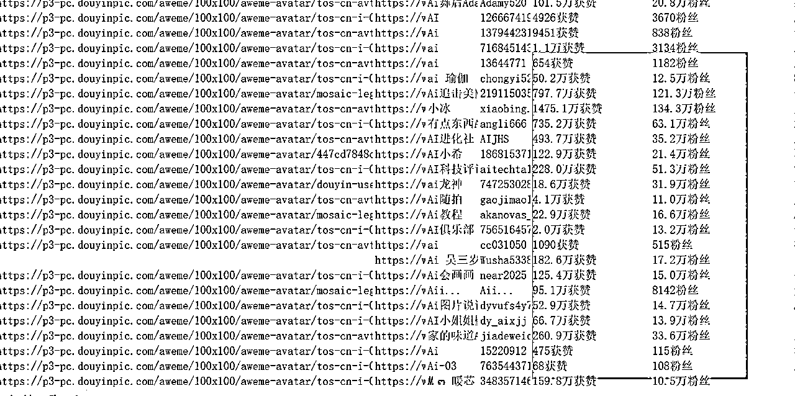
给GPT设置角色，并且让他学习Excel的数据结构
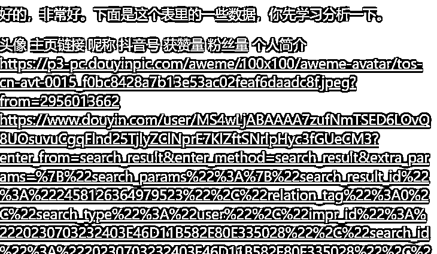
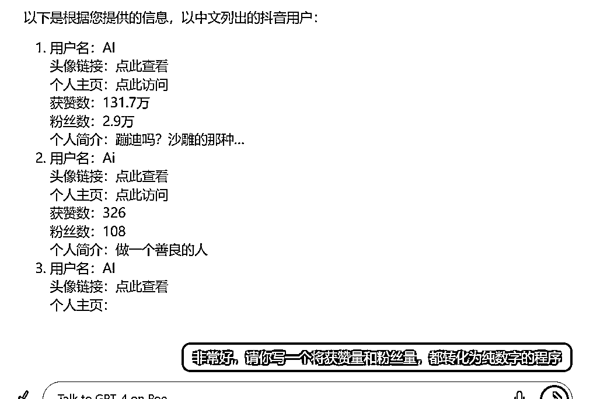
学习会结构之后，让他编写一个数字转化程序。可以逐步的提出要求
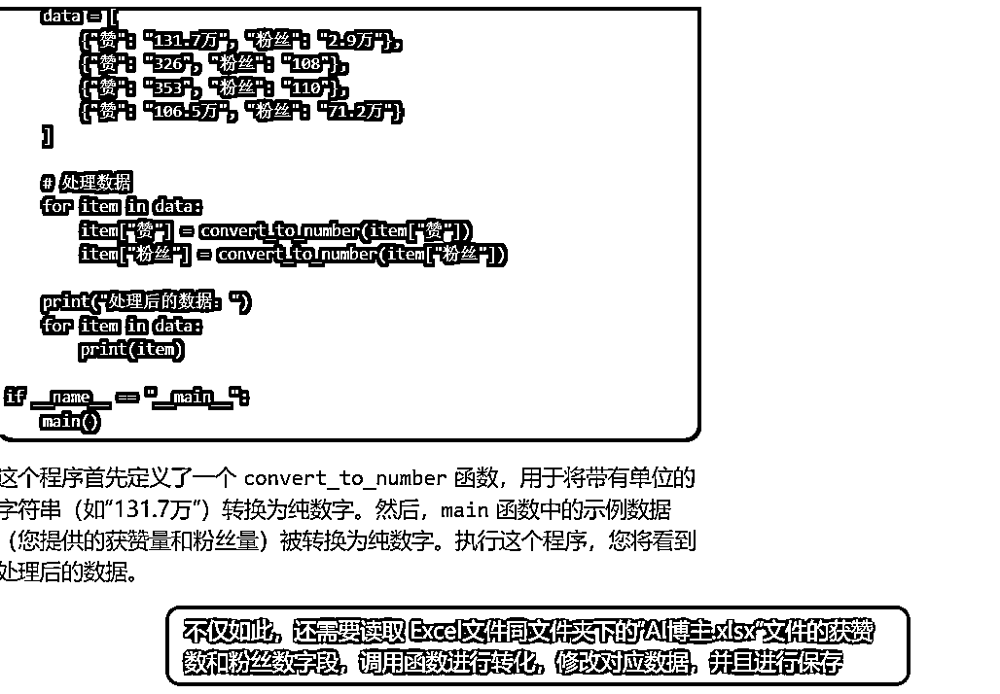
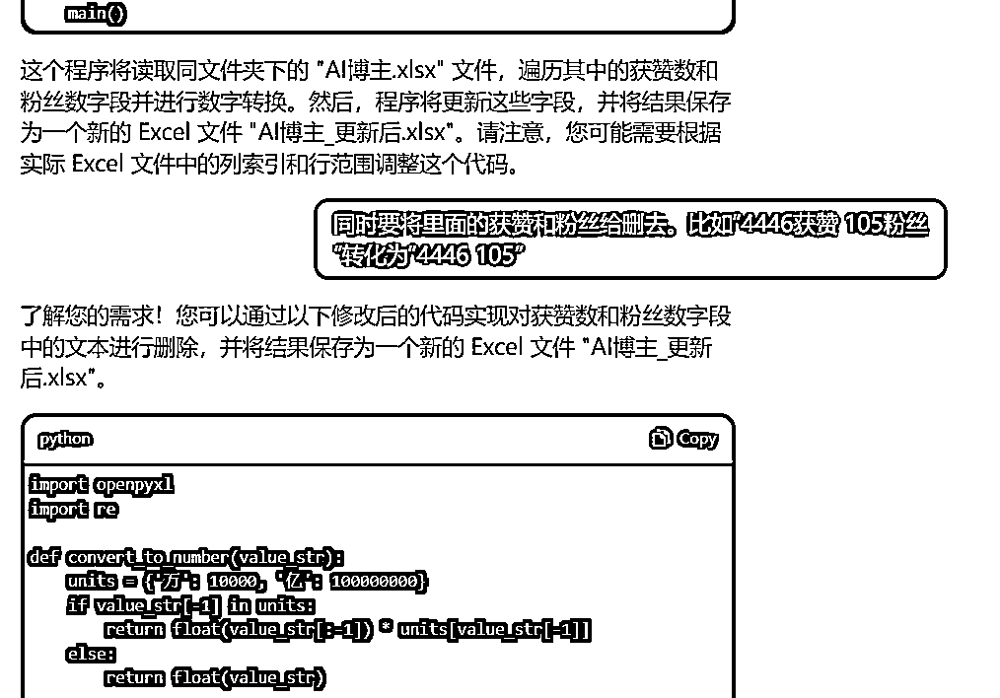
程序运行完毕之后出现了错误，只是转化了数字，但是没有乘10000
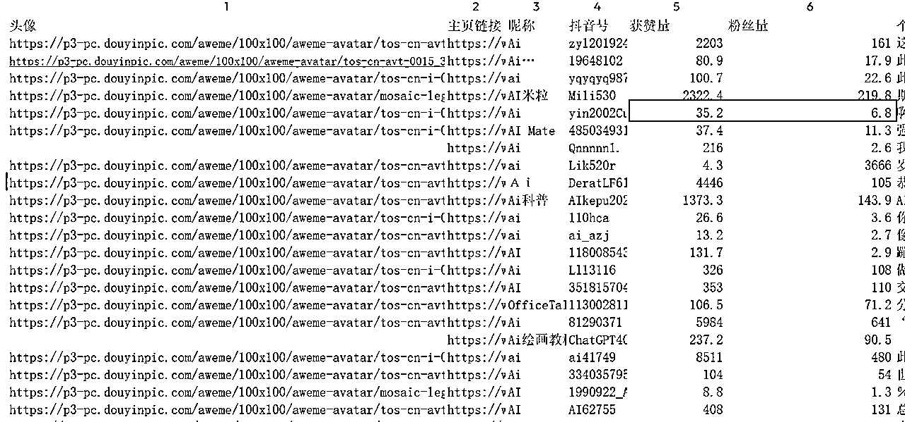
输入错误，让GPT进行修改
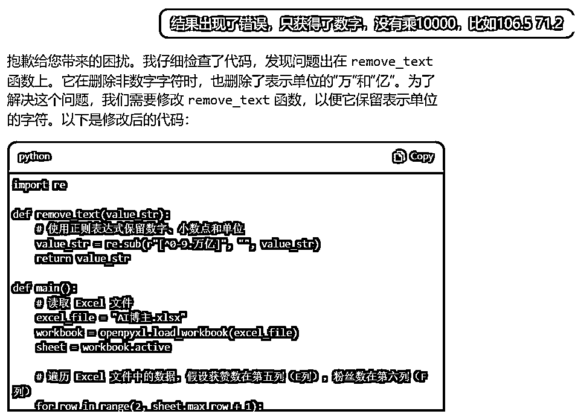
最终完成了正确的代码
import openpyxl
import re
def convert_to_number(value_str):
units = {'万': 10000, '亿': 100000000}
try:
if value_str[-1] in units:
return float(value_str[:-1]) * units[value_str[-1]]
else:
return float(value_str)
except ValueError as e:
print(f"无法转换的字符串：'{value_str}'，跳过此行。")
return None
def remove_text(value_str):
# 使用正则表达式保留数字、小数点和单位
value_str = re.sub(r"[^0-9.万亿]", "", value_str)
return value_str
def main():
# 读取 Excel 文件
excel_file = "AI博主.xlsx"
workbook = openpyxl.load_workbook(excel_file)
sheet = workbook.active
# 遍历 Excel 文件中的数据，假设获赞数在第五列（E列），粉丝数在第六列（F列）
for row in range(2, sheet.max_row + 1):
# 读取获赞数和粉丝数
like_str = sheet.cell(row=row, column=5).value
follower_str = sheet.cell(row=row, column=6).value
# 删除文本
like_str = remove_text(like_str)
follower_str = remove_text(follower_str)
# 转换为纯数字
like_num = convert_to_number(like_str)
follower_num = convert_to_number(follower_str)
# 如果转换成功，则更新数据
if like_num is not None and follower_num is not None:
sheet.cell(row=row, column=5).value = like_num
sheet.cell(row=row, column=6).value = follower_num
# 保存修改后的 Excel 文件
workbook.save("AI博主_更新后.xlsx")
print("已成功更新并保存为 'AI博主_更新后.xlsx' 文件！")
if __name__ == "__main__":
main()
最终运行成功
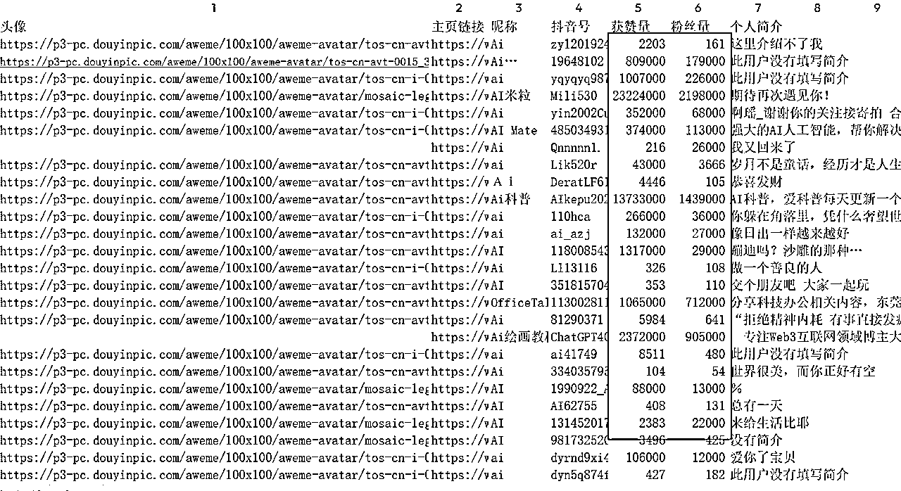
如果没有个人简介的，大概率不是AI博主。
个人简介 为【此用户没有填写简介】，【谢谢你的关注】【空】的进行删除
同时爬取的过程中可能会重复爬取
所以按照 抖音号 字段删除重复项
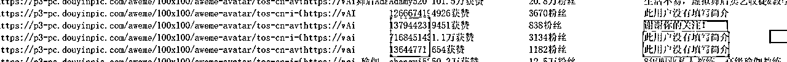
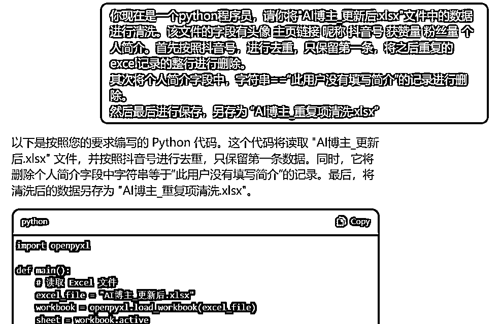
代码如下
import openpyxl
def main():
# 读取 Excel 文件
excel_file = "AI博主_更新后.xlsx"
workbook = openpyxl.load_workbook(excel_file)
sheet = workbook.active
# 去重抖音号
unique_douyin_ids = set()
row = 2
while row <= sheet.max_row:
douyin_id = sheet.cell(row=row, column=4).value
# 如果抖音号已经存在，删除整行记录
if douyin_id in unique_douyin_ids:
sheet.delete_rows(row)
else:
unique_douyin_ids.add(douyin_id)
row += 1
# 删除个人简介为“此用户没有填写简介”的记录
row = 2
while row <= sheet.max_row:
bio = sheet.cell(row=row, column=7).value
# 如果个人简介等于“此用户没有填写简介”，删除整行记录
if bio == "此用户没有填写简介":
sheet.delete_rows(row)
else:
row += 1
# 保存清洗后的 Excel 文件
workbook.save("AI博主_重复项清洗.xlsx")
print("已成功清洗并保存为 'AI博主_重复项清洗.xlsx' 文件！")
if __name__ == "__main__":
main()
运行结果如下
通常很多人会把抖音号设置为微信号
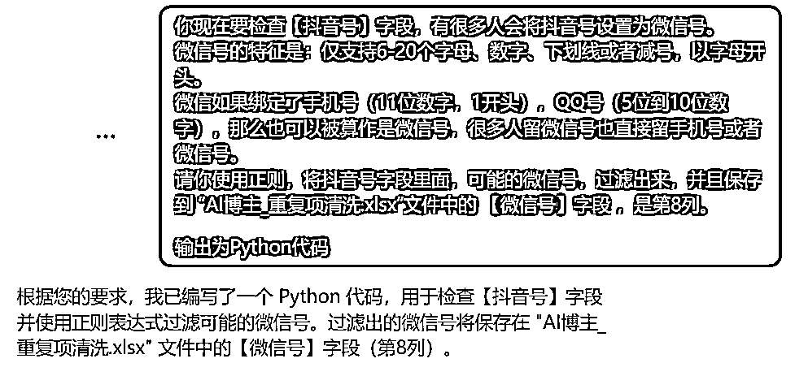
你现在要检查【抖音号】字段，有很多人会将抖音号设置为微信号。
微信号的特征是：仅支持6-20个字母、数字、下划线或者减号，以字母开头。
微信如果绑定了手机号（11位数字，1开头），QQ号（5位到10位数字），那么也可以被算作是微信号，很多人留微信号也直接留手机号或者微信号。
请你使用正则，将抖音号字段里面，可能的微信号，过滤出来，并且保存到 “AI博主_重复项清洗.xlsx”文件中的 【微信号】字段 ，是第8列。
输出为Python代码
代码为下
import openpyxl
import re
def is_wechat_id(douyin_id):
# 检查是否符合微信号规则
wechat_rule = re.compile(r"^[a-zA-Z][a-zA-Z0-9_-]{5,19}$")
phone_rule = re.compile(r"^1\d{10}$")
qq_rule = re.compile(r"^\d{5,10}$")
if wechat_rule.match(douyin_id) or phone_rule.match(douyin_id) or qq_rule.match(douyin_id):
return True
return False
def main():
# 读取 Excel 文件
excel_file = "AI博主_重复项清洗.xlsx"
workbook = openpyxl.load_workbook(excel_file)
sheet = workbook.active
# 检查抖音号字段，并将可能的微信号保存到第8列
for row in range(2, sheet.max_row + 1):
douyin_id = sheet.cell(row=row, column=4).value
# 使用正则表达式检查抖音号是否可能是微信号
if is_wechat_id(douyin_id):
sheet.cell(row=row, column=8).value = douyin_id
# 保存更改后的 Excel 文件
workbook.save("AI博主_重复项清洗.xlsx")
print("已成功将可能的微信号保存到 'AI博主_重复项清洗.xlsx' 文件中的【微信号】字段！")
if __name__ == "__main__":
main()
同时有些人还有可能将微信号写在个人简介里面
你写的非常好，下面从个人简介中解析出微信号：
匹配微信的正则表达式是：
[a-zA-Z\d][ a-zA-Z\d_-](5,19}
除此之外
1、内容出现1开头的11位手机号，基本上多半是微信号，正则表达式如下：
1\d(10}
2、冒号（分中文冒号和英文冒号）后面跟的英文+数字的内容，基本上多半是微信
号，正则表达式如下：
[:\uff1a][\s]?[a-zA-Z\d][a-zA-Z\d_-]{5,19]
3、包含"联系或者"合作"内容，后面跟的英文+数字的内容，基本上多半是微信号，正
则表达式如下：
[\u52a0/\u5fae].{0,10}[a-zA-Z\d][a-zA-Z\d_-](5,19]
(\u5fae\u4fe1/\u8054\u7cfb/\u5408\u4f5c).{0,10}[a-zA-Z\d][a-zA-
Z\d_-1{5,19}
请你根据这里的提醒，匹配个人简介字段中可能存在的微信号，添加到 微信号1字段中（第9列），输出为Python代码
import openpyxl
import re
def find_wechat_id(bio):
patterns = [
r"[a-zA-Z\d][ a-zA-Z\d_-]{5,19}",
r"1\d{10}",
r"[:：][\s]?[a-zA-Z\d][a-zA-Z\d_-]{5,19}",
r"[\u52a0/\u5fae].{0,10}[a-zA-Z\d][a-zA-Z\d_-]{5,19}",
r"(\u5fae\u4fe1/\u8054\u7cfb/\u5408\u4f5c).{0,10}[a-zA-Z\d][a-zA-Z\d_-]{5,19}"
]
for pattern in patterns:
match = re.search(pattern, bio)
if match:
return match.group()
return None
def main():
# 读取 Excel 文件
excel_file = "AI博主_重复项清洗.xlsx"
workbook = openpyxl.load_workbook(excel_file)
sheet = workbook.active
# 从个人简介字段解析可能的微信号，并保存到第9列
for row in range(2, sheet.max_row + 1):
bio = sheet.cell(row=row, column=7).value
# 使用正则表达式检查个人简介中是否可能包含微信号
wechat_id = find_wechat_id(bio)
if wechat_id:
sheet.cell(row=row, column=9).value = wechat_id
# 保存更改后的 Excel 文件
workbook.save("AI博主_重复项清洗.xlsx")
print("已成功将个人简介中可能的微信号保存到 'AI博主_重复项清洗.xlsx' 文件中的【微信号1】字段！")
if __name__ == "__main__":
main()
最终结果如下
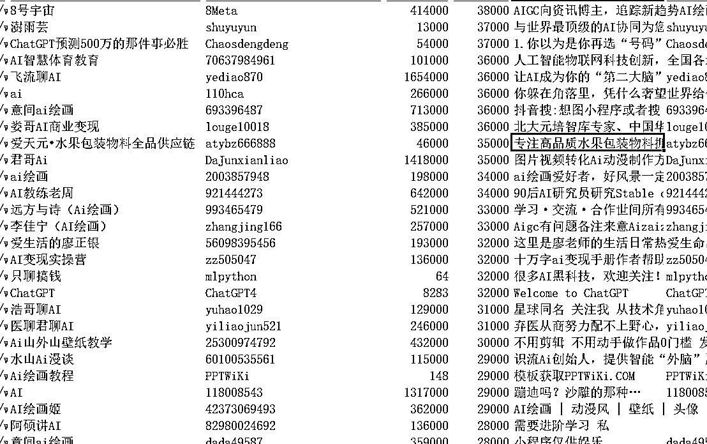
其实市面上可以自动添加的软件一抓一大把
下面这个是相对口碑比较好的，也有专人一直在维护（不是广告，他们确实是一直在维护这个软件）
这种添加方式是RPA，其实就和我们手动添加是一样的，只不过是程序帮你做了操作而已，是最安全的一种方法
我看了一下最新的更新是在7.3日
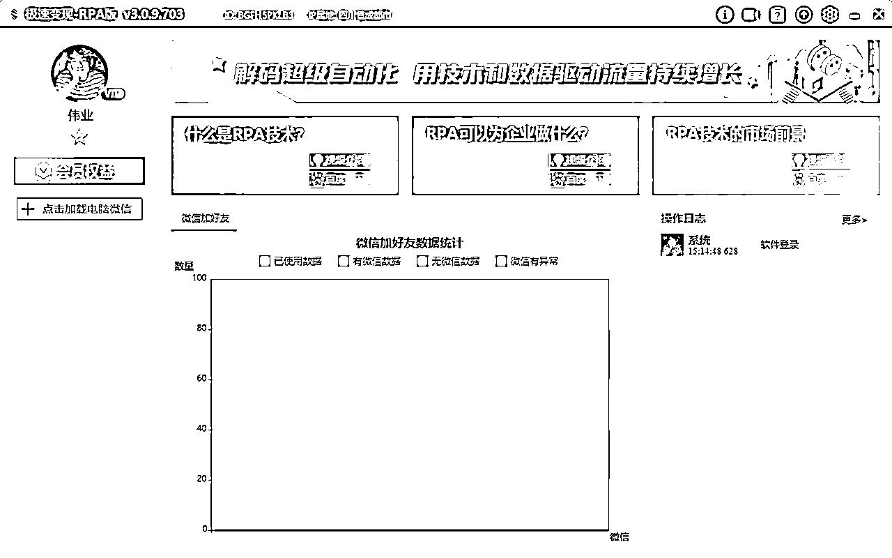
软件官网http://www.jisubianxian.com/
需要安装特定版本的微信 https://soft.3dmgame.com/down/247977.html
禁止微信升级补丁https://cup.lanzoui.com/pcwxnoupdate
使用方法
名单有四个字段，分别是微信号，昵称，标签和招呼语
目前我这个账号每天添加20-30人是可以的
我想要在宇宙中留下痕迹，不是被宇宙留下痕迹。 ——史蒂夫·乔布斯
伟业简介：
从小我就有三个理想：
第一个理想是成为一个优秀的企业家，开创属于自己的事业，哪怕只是一个10人的小公司，我不想辜负我的名字。
第二个理想是成为一个教育者，传授知识，启迪思维。我享受传授知识的过程，我希望通过我的教导，人们能够受益，不再为知识而困扰。我渴望把我的经验和见解变成语言，写成书，让我的声音被世界听见。
第三个理想是成为一个创造者，把想象力转化为现实。我热爱将东西从无到有、从混乱到有序的过程。我痴迷于优化和完善事物，享受着从混乱中创造出秩序的过程，这给我带来了无与伦比的满足感。
何其幸运，就在今年，这三个理想在我身上得到了融合，它们已经成为了我生活的一部分。
最后感谢生财这个平台，感谢亦仁大大！